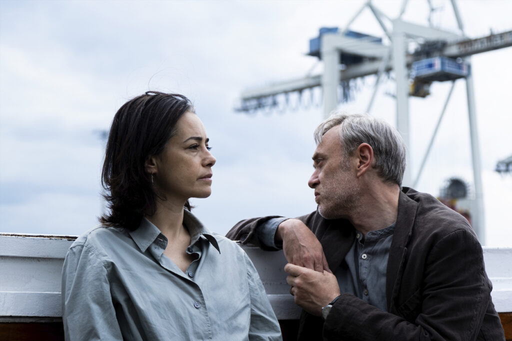
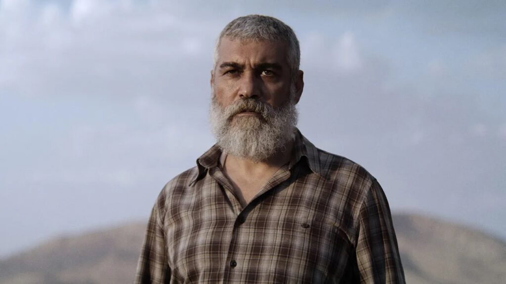

Berlinale’de bu yıl politik tartışmalar geçtiğimiz yıllardakinden bile daha hararetliydi. 12-22 Şubat tarihleri arasında düzenlenen festivalin kapanışında en büyük iki ödül Türkiye’yi odağına alan ve güncel siyasi gerilimlere doğrudan temas eden iki filme; İlker Çatak imzalı Sarı Zarflar’a ve Emin Alper’in yazıp yönettiği Kurtuluş’a gitti.
Berlinale, özellikle son iki yılda Almanya’nın resmî devlet politikalarıyla paralel konumlanması sebebiyle sinema dünya-sından yoğun tepki alıyordu. Bu yıl festivalin açılışında gerçekleşen basın toplantısında gazeteci Tilo Jung, Berlinale’nin geçtiğimiz yıllarda Ukrayna ve İran halklarıyla dayanışma göstermesine rağmen Filistin halkıyla aynı dayanışmayı sergilemediğini belirtti. Almanya’nın Filistin’deki soykırımın finansörlerinden biri olduğunu ve aynı zamanda festivalin de ana destekçisi olduğunu söyleyerek, jüri üyelerine festivalin insan hakları konusunda ayrımcı tutum takınıp takınmadığını sordu. Bunun üzerine jüri başkanı Wim Wenders, “Biz siyasetin dışında kalmalıyız; özellikle politik filmler yaptığımızda zaten siyasetin alanına giriyoruz. Ama biz siyasetin denge unsuruyuz, siyasetin tam tersiyiz. Biz siyasetçilerin değil, insanların işini yapmalıyız,” dedi. Oysa aynı Wenders, 1988’de verdiği bir röportajda “Her film politiktir. En politik olanlar ise politik olmadığını iddia eden, ‘eğlencelik’ filmlerdir,” demişti. Öte yandan Oscar ödüllü Holokost filmi İlgi Alanı’nın (The Zone of Interest, 2024) yapımcıları arasında yer alan jüri üyesi Ewa Puszczyńska da aynı soruya cevaben “filmler politik olmaktan ziyade empati ve başkalarını anlayabilmek üzerinedir” diyerek sinemayı siyasetin uzağında gördüğünü ima eden bir cevap verdi. Jüri üyelerinin bu sözleri özellikle sosyal medyada sinema politika ilişkisine dair tartışmaları yeniden alevlendirdi.

Ana yarışmada 22 filme yer veren Berlinale’nin ödül gecesine gelindiğinde ise Wenders ve jüri üyeleri, âdeta yukarıdaki sözlerini geri alırcasına, yarışmanın belki de en politik iki filmine –üstelik güncel Türkiye siyasetine doğrudan temas eden iki yapıma– en büyük iki ödülü verdi. İlker Çatak, Oscar adayı Öğretmenler Odası’nı (Das Lehrerzimmer, 2023) takip eden ve Türkiye üzerine bir öykü anlatan yeni filmi Sarı Zarflar’la (Gelbe Briefe) Altın Ayı’nın sahibi oldu.Öğretmenler Odası’nda Almanya’daki gündelik ırkçılığa yakından bakan Çatak, filmin En İyi Uluslararası Film dalında Almanya adına Oscar’a aday gösterildiği dönemde Almanya basınında ayrımcılıkla karşılaşmıştı. Yönetmenin adı Almanya basınında âdeta sansüre uğramış, sanki Çatak’ın Türkiye asıllı olduğunu saklamak istercesine manşetlerde yer almamıştı. O yıl Wenders Mükemmel Günler (Perfect Days, 2023) filmiyle En İyi Uluslararası Film kategorisinde, Sandra Hüller ise Bir Düşüşün Anatomisi’yle En İyi Kadın Oyuncu dalında Oscar’a aday olmuştu. İlker Çatak yeni filmi Sarı Zarflar’da, bu sefer güncel Türkiye siyasetine dair bir hikâye anlatıyor. Muhalif oldukları için işlerinden edilen biri tiyatrocu, diğeri akademisyen evli bir çiftin hayatlarının nasıl altüst olduğunu ele alan film, Hamburg’un İstanbul’a, Berlin’in ise Ankara’ya dönüştüğü arka planıyla seyirciyi öyküye yabancılaştırmak ve anlatılan meseleyi coğrafi bağlamından koparmak istiyor. Türkiye ile Almanya’ daki toplumsal, siyasal dinamiklerin birbirinden sanıldığı kadar uzak olmadığını da düşündüren yapımın taşıdığı aciliyet duygusunun, büyük ödüle uzanmasında önemli payı olduğu söylenebilir.

Jüri Büyük Ödülü’nü kazanan Kurtuluş’ta ise Emin Alper, Türkiye sınırları içinde, halkı korucu olan bir Kürt köyünde geçen, paranoya ve korkuyla örülü bir gerilim hikâyesi anlatıyor. Filmin ana karakteri Mesut (Caner Cindoruk) sürgün edilmiş bir aşiretin topraklarına geri dönmesiyle sanrılar görmeye başlıyor ve rakip aşiretin kızlarını, çocuklarını ve mallarını ele geçireceği paranoyasına kapılarak köyün şeyhi olan abisinin cemaati korumak konusundaki yeterliliğini sorguluyor. Korkunun paranoyaya, paranoyanın deliliğe, deliliğin trajediye dönüştüğü karanlık bir sarmal yaratan film, yönetmenin önceki yapımlarından Tepenin Ardı (2012) ve Abluka’yla (2015) tematik ve estetik benzerlikler taşıyor. Gotik unsurlardan beslenen atmosferiyle ve iç içe geçen rüya sahneleriyle Kurtuluş, seyirciyi içine çeken bir dünya yaratıyor.